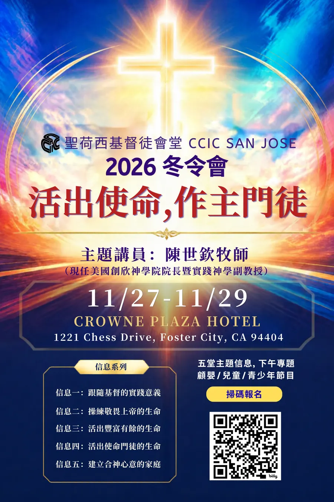
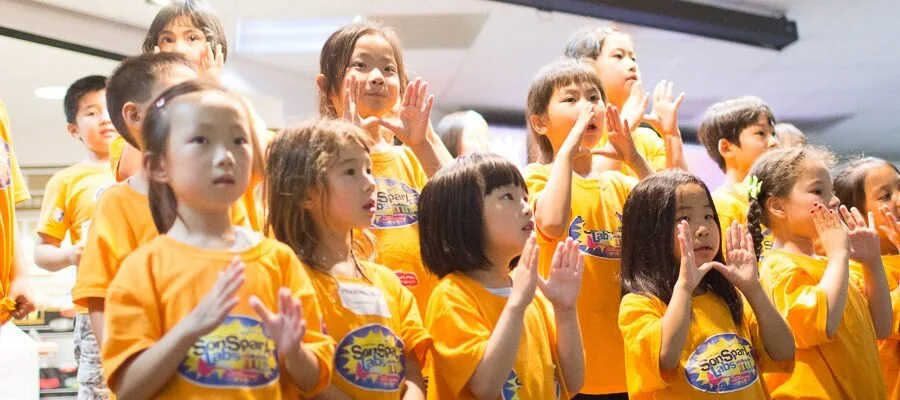

Chinese Church In Christ · San Jose, since 1971
Encounter Jesus. Belong to a Family.
Whether you're a believer or just exploring, near or far, a long-time resident or passing through — you're welcome in our CCIC family, where lives are transformed by the gospel of Jesus Christ.

This Week's Message
Rivers of Living Water
John 7:37–39
Sunday, September 6, 2026 · Mandarin Congregation
Latest News
What's happening at CCIC right now
Nov 27–292026 Winter Retreat — "Living Out Our Mission, Being Christ's Disciples"Speaker: Rev. Chen Shih-chin · Crowne Plaza Hotel, Foster City

Full retreat flyer with schedule and registration details, from the church's Mandarin congregation page.
View on the church website →Fridays, through Nov 20Mandarin Alpha CourseFriday evenings · 6:30 PM dinner, 7:30 PM session
A relaxed, no-pressure course over a meal where newcomers and spiritual seekers can ask honest questions about the Christian faith — offered in Mandarin and English.
View on the church website →Wednesdays · 8:00–9:30 PMPrayer MeetingRoom 321 — all are welcome to pray together.
The church has resumed in-person Sunday worship, Sunday school, and weekday fellowship Bible studies — come in person if your health allows.
View on the church website →Starts Dec 30New Daily Bible Reading PlanSign up to join; pick up a printed schedule at the 1st-floor bulletin board.
A new reading cycle begins Dec 30 — pick up a printed schedule at the 1st-floor bulletin board, or follow along online.
Register for the reading plan →View the full plan & progress →
Sep 6 – Nov 22Fall Adult Sunday SchoolJoy of Bible Reading (8) · Romans · Discipleship Training (4): Receiving God's Word · Foundations of the Faith
Four course tracks meet in parallel each week. Sign up to receive class notifications and course descriptions.
Sign up for Sunday school →Pulled from the church's Mandarin congregation page (ccic-sj.org/mandarin/about) as of Nov 2026, translated for this demo. On the real site this block would be editable by church staff through a simple admin page — no code changes required.
Our Community · 華人社區
A spiritual home for the Chinese American community
CCIC began in 1969 with a handful of international graduate students far from home — and that heart for welcoming Silicon Valley's Chinese American community has never changed.
Newcomer Welcome
From young professionals starting their first Silicon Valley job to older parents and grandparents newly immigrated from China to be near family, we help newcomers of every age find community, language partners, and practical help settling in. Our 啟發課程 (Alpha Course) offers newcomers and spiritual seekers a relaxed, no-pressure way to explore the Christian faith together.
Multigenerational Family
Mandarin-speaking parents, Cantonese-speaking grandparents, and English-speaking children all worship under one roof — with ministries that bridge every generation.
Cultural Belonging
Lunar New Year gatherings, mooncake fellowship, and language-rooted worship honor our heritage while pointing every generation to Christ.
Every month, our Missions & Compassion team shares the gospel at Cupertino Village — one of the Bay Area's most-visited Chinese American shopping centers — because this community is our community.
Next Generation
Find community as a young professional or young family
Many of our young adults are Chinese professionals who recently moved from China, Taiwan, and across Asia for Silicon Valley careers — alongside American-born Chinese young professionals who grew up here. Two language paths, one church family.
Two languages, one young-professional community
Whether you just landed from Shanghai, Taipei, or Shenzhen for your first tech job, or you grew up in an English-speaking church, here are two starting points — pick the one where you'd feel most at home.
See Both Paths ↓Mandarin Young Professionals Fellowship
For recent arrivals from China, Taiwan, and across Asia working in tech, biotech, and grad school — career, dating, visa stress, and faith questions, discussed in Mandarin with people who've lived it.
Sundays · Mandarin Congregation →English Ministry — Abide SJ
An English-speaking congregation for young adults and families — many grew up in this church, many are American-born Chinese professionals, and many are exploring faith or church for the first time. Worship, teaching, and small groups, in English.
Sundays 11:00 · Abide SJ →Sample stories for this demo — to be replaced with real, permissioned testimonies before launch.
I hadn't been to church since high school and had a lot of questions. Someone from Abide SJ just kept inviting me to dinner — no pressure, no pitch. That's how I found a few real friends here.
Our daughter started in the nursery at six weeks old. Now she's in AWANA and asks to go to church — we didn't have to convince her.
I moved from Taipei for a product manager role and knew no one in the Bay Area. The Mandarin Young Professionals Fellowship became the first place here that felt like family.
What We Believe
Our Statement of Faith
Six convictions that have anchored CCIC since our first Bible study — unchanged, and worth your questions.
One God, Three Persons
Holy, just, merciful, and sovereign — eternally Father, Son, and Holy Spirit.
The Deity of Christ
Born of the Virgin Mary, crucified for our sins, risen bodily, and coming again.
The Holy Spirit
Indwelling every believer, teaching truth and empowering life and ministry.
Scripture
God-breathed and without error as given — our final authority for faith and life.
Salvation
All have sinned and are separated from God; all who trust Christ are reconciled, with eternal life.
The Church
Christ is her head; believers serve together to carry the gospel to every people.
Find Your Place
Ministries & Congregations
One church, gathered in three languages, with a place for every age and every stage of faith.
Mandarin Congregation
Sunday worship, Sunday school, small-group Bible studies, and fellowship for Mandarin-speaking families.
Worship 9:30 · Sunday School 11:00 — Sanctuary AEnglish Ministry
Abide SJ gathers English-speaking adults and families for worship and community alongside our youth.
Sundays 11:00 — Sanctuary ACantonese Congregation
Sunday worship and fellowship rooted in Cantonese language and culture.
Sundays 11:00 — Sanctuary BYouth Ministry
Discipleship for middle and high schoolers, walking alongside them through adolescence.
Sundays 11:00 — Sanctuary A
Children's Ministry
Age-appropriate teaching from nursery through 5th grade, plus AWANA — our weekly kids' Bible memory and games club.
Sunday School 9:30Missions & Compassion
Local outreach and global missions support — evangelism, short-term trips, and compassion projects.
See this year's calendar →Alpha Course
A relaxed, no-pressure course over a meal where newcomers and spiritual seekers can ask honest questions about the Christian faith — offered in Mandarin and English.
New cohorts start quarterly — email ccic-sj@hotmail.com to ask about the next oneWatch & Listen
Recent messages
Sermon audio and video from all three congregations — integration point for YouTube livestream and the sermon archive.
Mandarin Sermon Audio
Recent messages, recorded live in Sanctuary A.
Watch on our YouTube channel →English Sermon Video
Livestream and on-demand video from Abide SJ.
Watch on our YouTube channel →Cantonese Sermon Audio
Recent messages from the Cantonese congregation.
Watch on our YouTube channel →Sermon Library
Search our sermon archive
113 messages from our YouTube channel, 2015–present — browse by date and type, or search by topic, scripture, and speaker where that's been tagged.
Systematic Theology — 51 Lessons
A complete course on the foundations of the Christian faith — Scripture, God, Man, Sin, the Devil, Salvation, the Christian life, the Church, and the Second Coming — taught lesson by lesson by one of our teaching elders. It's been sitting on our channel for a decade, largely undiscovered.
Pulled from the real titles and descriptions already public on our YouTube channel. 63 of these 113 messages have a topic, scripture passage, or speaker tagged in their description, and search matches those — the rest are still browsable by date and type. Tagging more descriptions going forward (or pulling from another source, like sermon notes) would make more of the archive searchable.
Missions & Compassion
Reaching Silicon Valley — and the world
Mission Conference: Reaching the World
Three days of speakers, workshops, and prayer focused on local and global missions — open to the whole church family.
HelpOneChild Giving Tree
Cupertino Village evangelism — the "123, Let's Go!" movement
CCIC Neighborhood Block Party
Dates shown are illustrative for this demo — to be replaced with the church's confirmed calendar before launch.
Giving
Why we give
"It is more blessed to give than to receive." — Acts 20:35. Through your gifts, we partner together to make a difference in our community and around the world.
Online Giving
A secure platform for one-time or recurring gifts.
Give Online Not connected in this demo — will link to our real giving platform at launch.Cash & Check
Drop your gift in the offering box, 2nd floor lobby, or mail a check made out to "CCIC-SJ" to 1490 Saratoga Avenue, San Jose, CA 95129.
Stocks & Other Gifts
For stock gifts or other giving options, please email finance@ccic-sj.org.
Our Story
From a dorm Bible study to a family of churches
A non-denominational church rooted in Scripture and nearly six decades of faithfulness in Silicon Valley.
- 1969A handful of SJSU graduate students begin a small Bible study.
- 1971The study becomes a church: Chinese Church In Christ.
- Decades of growthMandarin, Cantonese, and English congregations — plus children's and youth ministries — take root.
- Planting churchesSister CCICs are planted in Mountain View, South San Jose, Milpitas, Cupertino, and Central San Jose; Milpitas later plants Pleasanton.
- TodayKnown as CCIC-SJ, still gathering every Sunday to worship in three languages.
Plan Your Visit
We'd love to meet you this Sunday
Sunday at CCIC
- 9:00 AMDoors & parking openUshers and the welcome desk are ready for first-time guests.
- 9:30 AMMandarin Worship & Sunday School beginsCantonese and Children's Sunday School also begin now.
- 11:00 AMEnglish, Cantonese & Youth Worship beginsMandarin Sunday School also begins now.
- 12:15 PMFellowship & lunchStay and meet your new church family.
-
Phone & Email(408) 364-2242 · ccic-sj@hotmail.com
-
First time here?Our ushers will greet you at the entrance — stop by our welcome desk and we'll introduce you to a ministry family.
-
ParkingReserved spots near the entrance for families and guests. When the lot is full, a shuttle runs from the Pinn Brothers lot, 9:00 AM–1:00 PM.